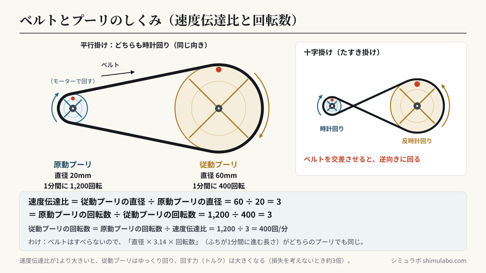
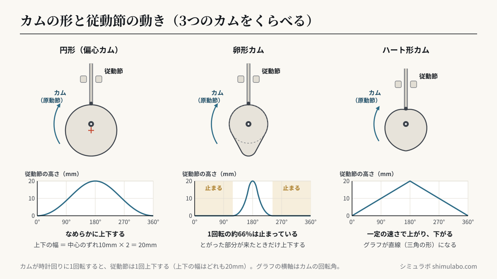

このシミュレーションでわかること
中学校 技術・家庭（技術分野）の「C エネルギー変換の技術」で学ぶ動力伝達の機構です。学習指導要領の解説（技術・家庭編 p.42）は、動力伝達の機構として「ベルトとプーリなどの摩擦を利用して動力を伝える機構」「歯車などのかみ合いを利用して動力を伝える機構」「カム機構などの目的とする動きに変換して動力を伝える機構」を挙げています。また p.45 では、課題の解決策を具体化するときに、繰り返し試行錯誤できる実験装置や「ＩＣＴを活用したシミュレーション等を用いて試行・試作させることも考えられる」としています。歯車のかみ合いは歯車シミュレーターで試せます。
授業での使い方
- 導入：自転車・洗濯機・自動車など身の回りの機械で、回転がどのように伝えられているかを考えます。「ベルトとプーリ」の画面で、原動プーリと従動プーリの赤い印（●）が何回まわったかを数え、回転数の比を予想してから確かめます。
- 展開：直径の組み合わせを変えて、速度伝達比と回転数を表に記録し、「直径の比」と「回転数の比」の関係をまとめます。「十字掛けにする」で回る向きが逆になることも確かめます。「カム機構」の画面では、3つの形のカムで従動節の動きのグラフをくらべ、「30°だけ回す」で角度ごとの高さを読み取ります。プーリやカムは指でドラッグして手で回せます。
- まとめ：「ゆっくり強く回したい」「ものを決まった間かくで持ち上げたい」など、製作の課題に合う機構を選び、理由を説明します（解説 p.45 の試行・試作）。
生徒への問いの例：
- 原動プーリの直径が20mm、従動プーリの直径が60mmです。速度伝達比はいくつでしょう。原動プーリが1分間に1,200回転するとき、従動プーリは1分間に何回転するでしょう。（答え：速度伝達比 3、400回転）
- 原動プーリと従動プーリを逆向きに回したいとき、ベルトの掛け方をどうすればよいでしょう。
- 従動節を「しばらく止めておき、ときどきすばやく上下させたい」とき、どの形のカムを使えばよいでしょう。
しくみ・解説






図はタップすると大きく表示されます。授業のプリント・スライド・板書計画に自由に使えます（出典「シミュラボ」とページのURLを添えてください）。
動力を伝える3つのしくみ
| 伝え方 | 例 | 特徴 |
|---|---|---|
| 摩擦を利用する | ベルトとプーリ、摩擦車 | 軸がはなれていても伝えられ、音が静か。大きな力がかかると、すべることがある |
| かみ合いを利用する | 歯車、チェーンとスプロケット | すべらないので、回転を正確に伝えられる |
| 目的の動きに変える | カム機構など | 回転運動を、往復運動などの別の動きに変える |
速度伝達比の計算（ベルトとプーリ）
従動プーリの回転数 ＝ 原動プーリの回転数 ÷ 速度伝達比
ベルトがすべらないとすると、ベルトが動く速さは、どちらのプーリのふちでも同じです。プーリのふちが1分間に進む長さは「円周（直径 × 3.14）× 回転数」なので、原動プーリの直径 × 原動プーリの回転数 ＝ 従動プーリの直径 × 従動プーリの回転数となり、上の式が成り立ちます。教科書では、回転数を「回転速度（単位 min-1＝1分間あたりの回転数）」と書くこともあります。
| 原動プーリの直径 | 従動プーリの直径 | 速度伝達比 | 従動プーリの回転数（原動 1,200回/分のとき） | 回り方 |
|---|---|---|---|---|
| 20mm | 20mm | 1 | 1,200回 | 同じ速さ・同じ力 |
| 20mm | 40mm | 2 | 600回 | ゆっくり・トルク約2倍 |
| 20mm | 60mm | 3 | 400回 | ゆっくり・トルク約3倍 |
| 20mm | 80mm | 4 | 300回 | ゆっくり・トルク約4倍 |
| 40mm | 20mm | 0.5 | 2,400回 | 速く・トルク約0.5倍 |
速度伝達比が1より大きいと、従動プーリはゆっくり回り、回す力（トルク）は大きくなります。1より小さいと速く回り、トルクは小さくなります（摩擦などによる損失を考えないとき）。速さと力の両方を同時に大きくすることはできません。
ベルトの掛け方と回る向き
ベルトをそのまま掛ける平行掛けでは、原動プーリと従動プーリは同じ向きに回ります。ベルトを交差させて掛ける十字掛け（たすき掛け）では、逆向きに回ります。ベルトとプーリは摩擦で動力を伝えるので、大きな力がかかったり、ベルトがゆるんだりすると、すべって回転が正しく伝わらないことがあります。ベルトの張りやすり減りを点検すること（保守点検）が大切です。回転を正確に伝えたいところには、歯車やチェーン、歯の付いたベルトが使われます。
カム機構
カム機構は、回転するカム（原動節）の形にそって、従動節を往復運動させるしくみです。カムの回転の中心から、ふちまでの長さが場所によってちがうので、カムが回ると、ふちに当たっている従動節が上下します。カムが1回転すると、従動節は1回上下します。
| カムの形 | 従動節の動き | 動きのグラフ | メモ |
|---|---|---|---|
| 円形（偏心カム） | なめらかに上下する（ゆっくり → 速く → ゆっくり） | なめらかな波の形 | 上下の幅 ＝ 中心のずれ（偏心量）× 2 |
| 卵形カム | 1回転のうち半分以上は止まっていて、とがった部分が来たときだけ上下する | 平らな部分と山 | 自動車のエンジンの弁（バルブ）の開け閉めなど |
| ハート形カム | 一定の速さで上がり、一定の速さで下がる | 直線の山（三角の形） | 一定の速さで往復させたいところ |
グラフの横軸はカムの回転角、縦軸は従動節の高さ（いちばん下からの高さ）です。グラフが平らなところは従動節が止まっているところ、かたむきが急なところは速く動いているところです。卵形カムでは、もとの円の部分（カムの回転の中心からの長さが同じ部分）に従動節が当たっているあいだは止まっていて、このシミュレーションの寸法では1回転の約6〜7割が止まっています。
このシミュレーションで単純にしていること
- ベルトはすべらず、のび縮みもしないものとしています。ベルトの厚さは考えず、プーリの直径で計算しています。
- 摩擦などによる損失は考えていません（トルクの倍率は目安です）。
- 従動節は先が細く、カムのふちの1点に当たるものとしています。実際の機械には、先にローラーが付いたものや、平らな面で当たるものもあり、動きが少しちがいます。
- 偏心カムは円板の半径40mm、卵形カムは大きい円の半径30mm・小さい円の半径12mm、ハート形カムはいちばん短い半径22mmで描いています。
- アニメーションは選んだ回転数どおりの速さで動きます（1分間に30回転なら、2秒で1回転）。
参考
- 文部科学省「中学校学習指導要領（平成29年告示）解説 技術・家庭編」技術分野 C エネルギー変換の技術（p.42 動力伝達の機構、p.45 ICTを活用したシミュレーション）（文部科学省 中学校学習指導要領解説のページ）
- 中学校 技術・家庭（技術分野）の教科書（開隆堂出版、東京書籍、教育図書）の「エネルギー変換の技術」の章
- 日本機械学会「機械工学辞典」クロス掛けベルト伝動（日本機械学会のページ）
引用・転載について
本ページのシミュレーション結果・数値は、出典を明記いただければブログ・ニュース記事・SNS・授業や社内資料への引用を歓迎します。事前連絡は不要です。
出典：シミュラボ「カムとベルト・プーリのシミュレーター（動力伝達の機構）」 https://shimulabo.com/sims/kamu-pulley/よくある質問
- 速度伝達比はどうやって求めますか？
- 速度伝達比 ＝ 原動プーリの回転数 ÷ 従動プーリの回転数 ＝ 従動プーリの直径 ÷ 原動プーリの直径 で求めます。原動プーリ20mm・従動プーリ60mmなら、60÷20＝3です。原動プーリが1分間に1,200回転すると、従動プーリは1,200÷3＝400回転します。
- 従動プーリを原動プーリより速く回すには、どうすればよいですか？
- 従動プーリの直径を、原動プーリより小さくします（速度伝達比が1より小さくなります）。そのかわり、回す力（トルク）は小さくなります。
- 十字掛けにすると、なぜ回る向きが逆になるのですか？
- ベルトを交差させると、原動プーリの上側を動くベルトが、従動プーリでは下側に回りこむためです。平行掛けでは同じ向き、十字掛け（たすき掛け）では逆向きに回ります。
- カム機構の原動節と従動節とは何ですか？
- カム機構で、回転して動きをつくり出すカムを原動節、カムに当たって動かされる部分を従動節といいます。カム機構は、カムの回転運動を、従動節の往復運動などに変えるしくみです。
- 円形の偏心カム・卵形カム・ハート形カムでは、動きはどうちがいますか？
- 偏心カムは、なめらかに上下します（上下の幅は中心のずれの2倍）。卵形カムは、1回転のうち半分以上は止まっていて、とがった部分が来たときだけ上下します。ハート形カムは、一定の速さで上がり、一定の速さで下がります。
- ベルトとプーリは、歯車とくらべてどんなところがちがいますか？
- ベルトとプーリは摩擦で動力を伝えるので、軸がはなれていても伝えられ、音が静かですが、大きな力がかかるとすべることがあります。歯車はかみ合いで伝えるので、すべらず回転を正確に伝えられます。